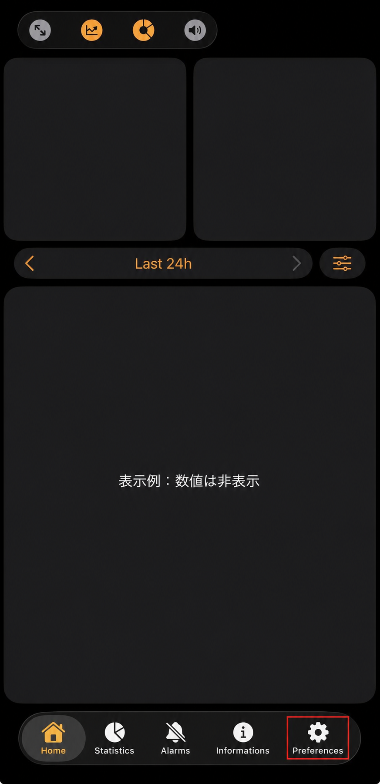
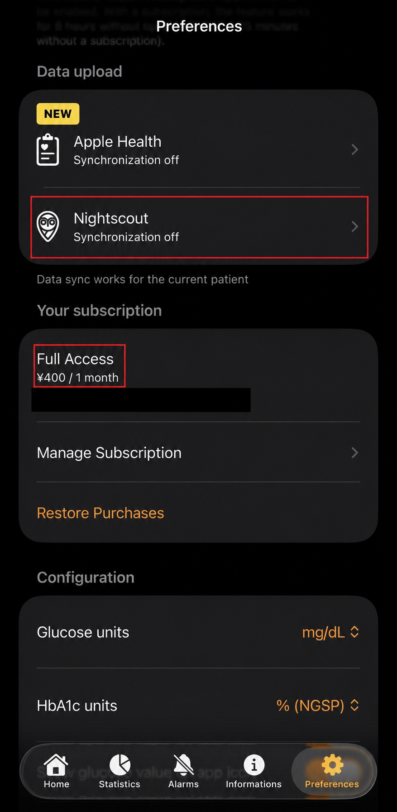
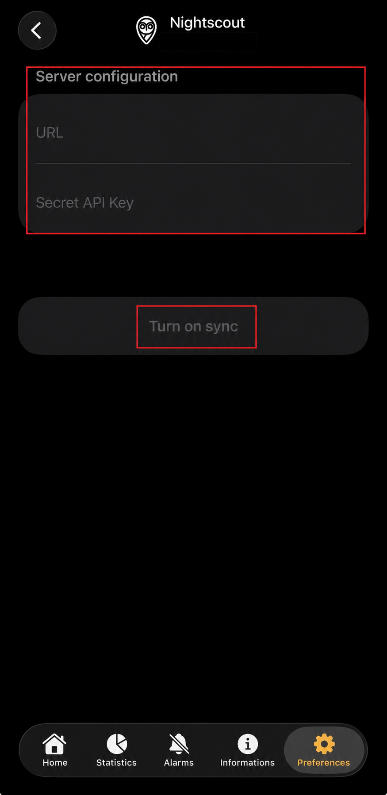
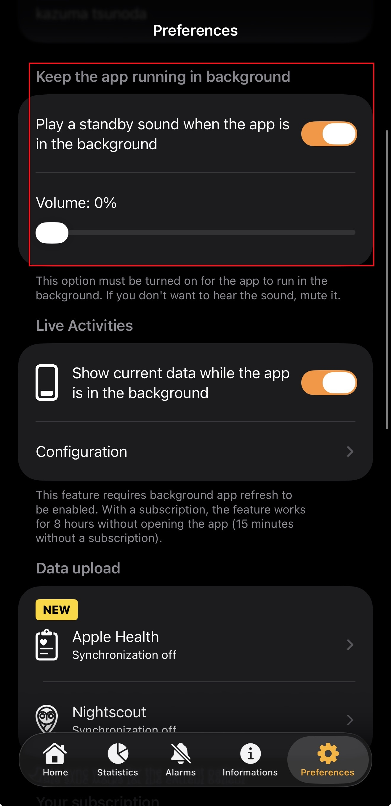

Guardian（MiniMed 780G） · iPhone
Guardian Monitorから
Glurooへつなぐ
Guardian MonitorのNightscout同期先に、Gluroo Global Connectを設定する方法です。kazumaのGuardian（MiniMed 780G）環境で、血糖データがGlurooへ続けて表示されることを実機確認しています。
始める前に：この手順には有料プランが必要です
Guardian Monitorは無料でダウンロードできますが、現在、このガイドで使うNightscout同期を含むフル機能には、アプリ内の有料サブスクリプション（Full Access）が必要です。これはGlucoScopeとは別の料金です。
料金や利用条件は変更される場合があります。設定を始める前に、App StoreのGuardian Monitorページ（外部サイト）とアプリ内の最新表示を確認してください。
このガイドで入力するもの
Glurooに表示されるNightscout URLとAPI Secret Tokenだけです。CareLink、Apple、GoogleなどのログインパスワードをGlucoScopeへ入力することはありません。
-
Guardian Monitorの「Preferences」を開きます
Guardian MonitorをCareLinkへ接続し、アプリ内に現在の血糖値が表示されていることを確認してから、画面下の「Preferences」を押します。表示名や画面の位置は、アプリ更新で変わる場合があります。

赤枠の「Preferences」を押します。公開用画像では血糖などの数値を隠しています。 -
Gluroo Global Connectの情報を開きます
Glurooの設定からGlobal ConnectのNightscout情報を開き、Nightscout URLとAPI Secret Tokenをコピーできる状態にします。
-
Guardian MonitorのNightscout同期先へ貼り付けます
Preferencesの「Nightscout」を開き、Gluroo Global ConnectのURLとAPI Secret Tokenを入力します。余分な空白が入らないよう、そのままコピーして貼り付け、「Turn on sync」を押します。

「Nightscout」を押します。画像の料金は撮影時の表示例です。最新の料金と条件はアプリ内で確認してください。 
URLとSecret API Keyへ貼り付け、「Turn on sync」を押します。公開用画像では氏名を隠しています。 -
バックグラウンド更新をオンにします
Guardian Monitorのオプションでバックグラウンド更新をオンにすると、アプリを前面で開いていない間もGlurooへ更新されやすくなります。通信状況やiPhoneの省電力状態により、反映が遅れることがあります。

使い方に合うバックグラウンド更新を選びます。通信状況などにより更新が遅れる場合があります。 -
Glurooで複数回の更新を確認します
Glurooに現在の血糖値とグラフが表示され、1回だけでなく複数回続けて更新されることを確認します。
すでに別のNightscoutへ送っている場合だけ
Guardian Monitorで設定できるNightscout送信先は1つです。Glurooへ変更すると、元の送信先への新しいデータ送信は止まります。一般的な初回設定では、この補足を意識する必要はありません。